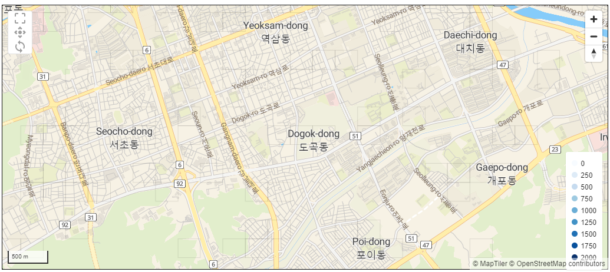
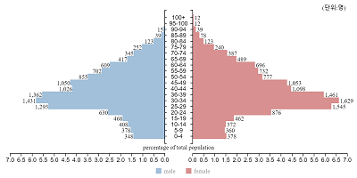
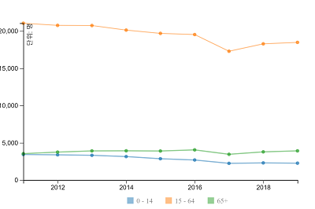
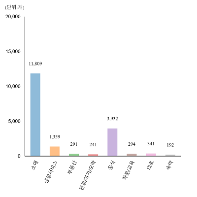
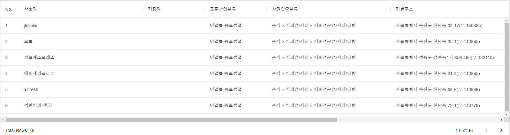

이 문서는 Ubimemes의 격자형 통계 지도 서비스를 이용하는 데 필요한 기초적인 사용방법을 설명하기 위한 문서입니다.
본 문서를 통해 격자형 통계 지도 서비스의 화면 구성과 기본적인 조작 방법을 이해할 수 있습니다.
Ubimemes의 격자형 통계 지도 서비스는 격자 지도를 기반으로 각종 데이터를 시각화하여 제공하는 서비스입니다. 조사 대상 지역을 마우스 드래그를 통하여 직관적으로 선택할 수 있으며, 선택한 지역 내의 통계정보를 다양한 형태의 차트로 확인할 수 있습니다.
화면 구성은 데이터 종류를 선택하기 위한 사이드바 메뉴와, 조사 지역 선택을 위한 격자지도, 선택 지역내의 정보를 표시하는 차트 및 데이터 테이블로 구성되어 있으며 각각의 특징을 아래에 소개합니다.
데이터 종류 선택
데이터 종류는 크게 소스 데이터의 특성을 있는 그대로 활용하기 위한 기초데이터와, 두개 이상의 데이터를 특정 목적으로 융합한 응용데이터로 분류하였습니다.
문서 작성 시점(2021년 1월) 기준, 기초데이터로는 인구현황과 상가업소현황을 제공하고 있으며, 응용데이터로는 상권조사를 목적으로 활용할 수 있는 데이터를 제공하고 있습니다. 제공하는 기초데이터의 출처는 아래와 같습니다.
No. | 목록 | 출처 |
1 | 인구현황 | 행정안전부 제공 ‘2019년도 주민등록인구현황' |
2 | 상가업소현황 | 소상공인진흥공단 제공 ‘2017년도 상가업소 현황' |
응용데이터인 상권조사데이터는 편의점과 치킨전문점을 예시로 제공하고 있습니다.
조사 대상 지역을 선택하는 데 필요한 기초적인 격자 지도 조작 설명입니다. 
지도의 확대/축소 /
또는 아이콘을 클릭하거나 마우스 휠을 사용하여 지도의 배율을 확대 또는 축소할 수 있습니다.
지도의 이동
아이콘이 선택된 상태에서 마우스를 드래그 하면 지도를 움직일 수 있습니다. Shift키를 누른채로 마우스를 드래그 하면 아이콘이 선택되지 않은 상태에서도 바로 이동시킬 수 있습니다.
대상 지역의 선택
아이콘이 선택된 상태에서 마우스를 드래그 하면 해당 영영이 선택됩니다. 선택된 격자는 정보의 밀도에 따라 그라디에이션으로 구분되어 표시됩니다. 선택되지 않거나 컬러가 표시되지 않는 격자는 관련 데이터가 없다는 것을 의미합니다.
데이터의 갱신 
지도를 확대/축소했거나 이동함에 따라 서버로부터 데이터를 다시 받아와야 하는 경우에 필요한 기능입니다. 아이콘을 클릭하면 그 시점에 지도에서 표시하고 있는 전체 지역에 대한 데이터를 갱신합니다. 상권조사 서비스에서의 입지조건 검색에서 조사 대상 범위를 설정할 때 사용하고 있습니다.
인구 피라미드
 | 선택 지역의 인구분포를 5세 간격으로 표시합니다. |
라인차트
 | 데이타의 변동 추이를 시계열로 표시합니다. |
바차트
 | 항목의 명칭이 지나치게 길어서 차트로 표시하였을 |
기타
기타 아래와 같은 차트를 포함하고 있습니다.
파이차트 | 그룹 바차트 |
|
|


데이터 테이블
전술한 화면구성에 기반한 격자형 통계 지도 서비스 각 메뉴의 조작 방법을 아래 문서에서 확인하실 수 있습니다.
- ‘기초데이터 - 인구현황' 조작 가이드
(예정) - ‘기초데이터 - 상가업소현황' 조작 가이드
(예정) - ‘상권분석 - 편의점상권' 조작 가이드 바로가기